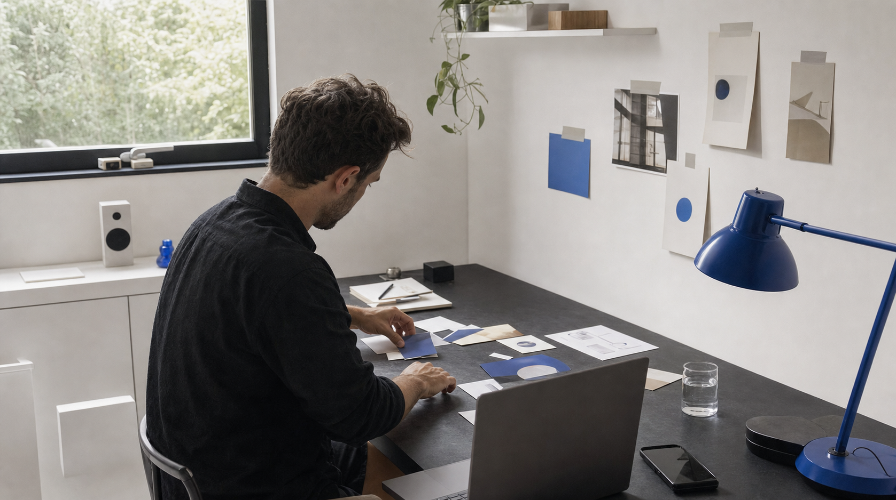
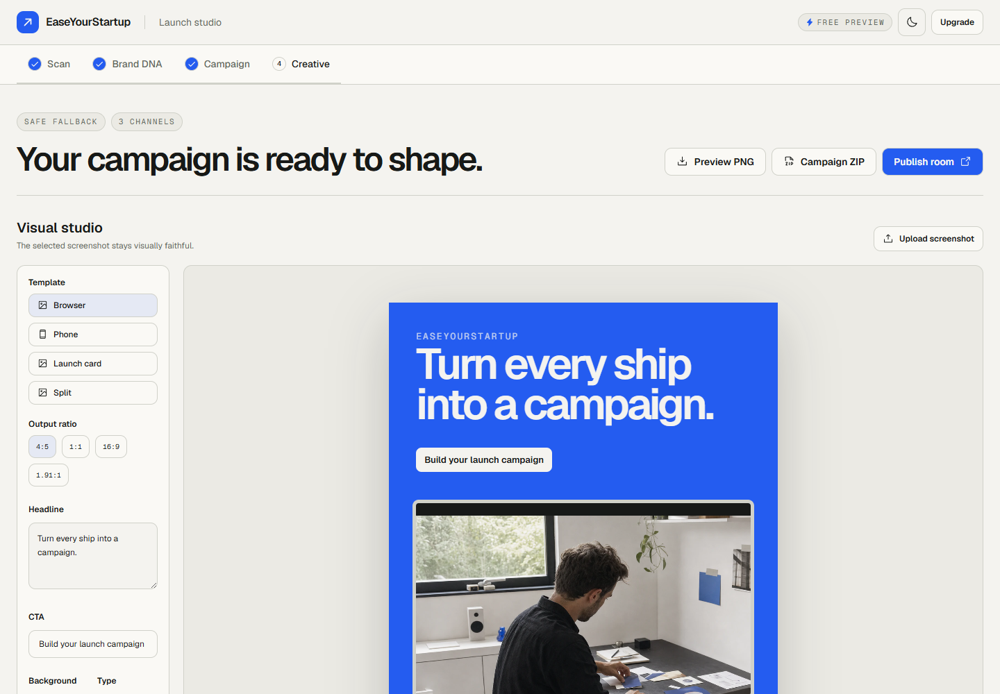

01 — Beyond the blank page
0:00–0:04Hook
For founders who keep shipping
Every launch deserves more than a blank page.
Voiceover: “Every launch deserves more than a blank page.”
Layout: founder image left; one outcome claim right.
02 — Turn every ship into a campaign
0:04–0:08Product promise
EaseYourStartup
Turn every ship into a campaign.
Voiceover: “Turn every ship into a campaign.”
Layout: real studio screenshot with the promise as the single headline.
03 — Start with the source
0:08–0:13FeatureA source-led workflow
Scan your public pages.
Keep claims tied to their source.
Layout: real UI remains intact; the stage strip repeats existing labels outside the screenshot.
04 — Meet founders where they publish
0:13–0:18FeatureChannel-ready copy
One update. The channels that matter.
Voiceover: “Build channel-ready copy for X, LinkedIn, Product Hunt, and email.”
Layout: product evidence left; four channel labels right. Labels are not presented as app controls.
05 — Keep the product real
0:18–0:23BenefitVisual studio
Keep the screenshot real.
Make the creative yours.
Voiceover: “Keep the product screenshot real. Make the creative yours.”
Layout: complete real screenshot shown at contain; headline stays outside the UI.
06 — Review and export
0:23–0:28BenefitReady to shape
Review. Preview. Export.
Voiceover: “Review the evidence. Preview your visuals. Export the full launch kit.”
Layout: controls match the screenshot; publishing remains the founder's choice.
07 — Keep shipping
0:28–0:33CTABuilt for founders who keep shipping
Turn every ship into a campaign.
Voiceover: “Built for founders who keep shipping. Start with a free scan.”
Layout: repeat the opening image, then resolve on the existing brand promise and CTA.